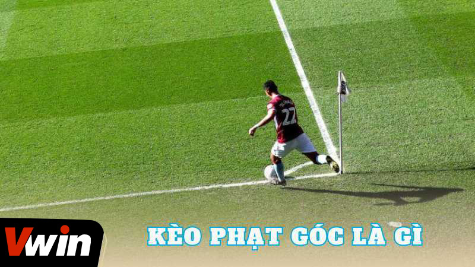
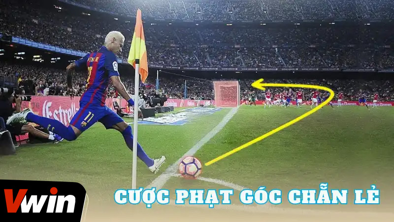

.png)
ĐÃ ĐĂNG TRÊN TRÊN THÁNG BA 12, 2024 BỞI Vwin
Trong thế giới cá cược, kèo phạt góc là một trong những lựa chọn được các người chơi đánh giá cao, bởi nó mang lại cơ hội thắng lớn mà không cần quá phức tạp trong cách đặt cược. Bài viết dưới đây sẽ rõ ràng hóa những chi tiết và bí mật của kèo phạt góc là gì, giúp bạn tiếp cận với cơ hội thành công một cách dễ dàng và hiệu quả.
Bạn đã bao giờ tự hỏi về kèo phạt góc là gì chưa? Đây không chỉ là một thuật ngữ đơn giản mà còn là một thế giới đầy bí ẩn trong lĩnh vực cá cược bóng đá trực tuyến.
Mặc dù được biết đến với tên gọi “kèo Corners”, nhưng điều thú vị là trong trò chơi này, bạn không cần quan tâm đến kết quả cuối cùng của trận đấu. Chỉ cần tập trung vào việc dự đoán số lượng cú đá phạt góc sẽ xuất hiện trong thời gian diễn ra trận đấu.
Hiểu Hơn Về Kèo Phạt Góc Là Gì?
Với kèo phạt góc, không chỉ đếm được số lượng cú đá phạt góc, mà còn có thể dự đoán đội bóng nào sẽ thực hiện cú đá phạt góc đầu tiên hoặc cuối cùng. Mỗi giải đấu mang đặc điểm riêng và từ đó, nhà cái sẽ cung cấp các loại kèo và tỷ lệ cá cược phù hợp. Điều này tạo ra một thế giới cá cược đa dạng và hấp dẫn, chờ đợi bạn khám phá!
Khi đã nắm vững khái niệm về kèo phạt góc là gì, bước tiếp theo là khám phá những phương thức soi kèo phạt góc phổ biến nhất hiện nay. Tận dụng những phương pháp phân tích kèo phạt góc, bạn có thể tìm ra những cơ hội và tiềm năng chiến thắng đáng giá.
Với các cược thủ, kèo tài xỉu phạt góc không chỉ là một loại cược phổ biến mà còn là điểm đến của một lượng lớn người chơi. Khi tiến hành phân tích kèo này, người chơi chỉ cần quyết định liệu tổng số quả phạt góc trong trận đấu có vượt quá mốc tài (tổng phạt góc cao hơn so với con số mà nhà cái đưa ra) hay xỉu (tổng phạt góc thấp hơn so với con số mà nhà cái đưa ra).
Phân Tích Kèo Tài Xỉu Phạt Góc
Thường thì, trong những trận đấu mà cả hai đội đều ưa thích lối chơi tấn công, mốc tài xỉu phạt góc thường được đưa ra khá cao. Tuy nhiên, người chơi cần lưu ý đến thời điểm xuất hiện của kèo để đặt cược một cách hiệu quả.
Đồng thời, việc soi kèo cần dựa trên nhận định về khả năng phòng thủ và tấn công của hai đội, cùng với việc áp dụng luật chơi cộng chấp bình thường để tăng cơ hội chiến thắng. Đó chính là bí mật đằng sau loại cược đông đảo này!
Khi tiếp cận loại cược này, hãy chuẩn bị cho một cuộc phiêu lưu đích thực, nơi sự khám phá và sáng tạo đều là chìa khóa. Dù vậy, đối với những tân binh, việc phân tích và dự đoán đội được hưởng quả phạt góc cụ thể có thể là một thử thách đầy kỳ vọng.
Trong những trận đấu căng thẳng, việc quan sát sự phát triển của trận đấu là chìa khóa để thành công. Theo dõi sự thay đổi của tỷ lệ cược đồng thời đánh giá hiệu suất thi đấu của cả hai đội sẽ giúp bạn có cái nhìn tỉ mỉ hơn về việc dự đoán đội nào sẽ nhận được quả phạt góc. Đây chính là cách tiếp cận mới mẻ và sáng tạo trong thế giới của cá cược bóng đá!
Cược chấp phạt góc là một phần không thể thiếu trong danh sách các kèo cược chấp châu Á. Trong đó, hai đội sẽ được chia thành đội cửa trên và đội cửa dưới. Người chơi phải đưa ra quyết định về đội nào sẽ là đội chấp và đội nào sẽ được chấp.
Kết quả thắng thua sẽ được xác định dựa trên số lượng quả phạt góc cụ thể mà mỗi đội đạt được trong trận đấu. Để tận dụng cơ hội chiến thắng trên sân cỏ, người chơi cần áp dụng các chiến lược phân tích một cách tinh tế và sáng tạo.
Để hiểu hơn về kèo phạt góc là gì, người chơi cần nắm chi tiết các loại cược. Trong đó cược phạt góc chẵn lẻ cũng là một loại cược quan trọng. Khác với những loại cược phức tạp khác, ở đây, người chơi chỉ cần tập trung vào việc dự đoán tổng số phạt góc của cả hai đội trong trận đấu và chọn xem tổng đó có phải là số chẵn hay lẻ. Điều này mang lại một cách tiếp cận đơn giản nhưng vẫn đầy kịch tính và thú vị.
Chiến Thuật Cược Phạt Góc Chẵn Lẻ
Cược phạt góc chẵn lẻ không chỉ là một trò chơi may rủi mà còn là một trận chiến chiến thuật, đòi hỏi người chơi phải kết hợp sự tỉ mỉ và kiến thức về các đội bóng. Với tính đơn giản và khả năng dự đoán mạnh mẽ, loại cược này thích hợp cho cả những người mới bắt đầu và những bet thủ có kinh nghiệm.
Kèo phạt góc không chỉ đơn thuần là một phần của cược bóng đá mà còn là một chiến lược đặt cược thông minh và hiệu quả. Tuy nhiên, để thành công trong loại cược này, người chơi cần hiểu rõ về khái niệm và cách thức hoạt động của kèo phạt góc.
Chỉ khi nắm vững kèo phạt góc là gì và áp dụng những chiến thuật phù hợp,anh em mới có thể tận dụng được lợi thế và đạt được tỉ lệ thắng cược cao hơn. Đừng ngần ngại khám phá và áp dụng những kỹ thuật này để trở thành một bet thủ thành công trong thế giới của cá cược bóng đá!
Vwin được công nhận là nhà cái cá cược hợp pháp - an toàn. Vwin còn có trụ sở chính và cá cược trực tiếp tại Phú Quốc.